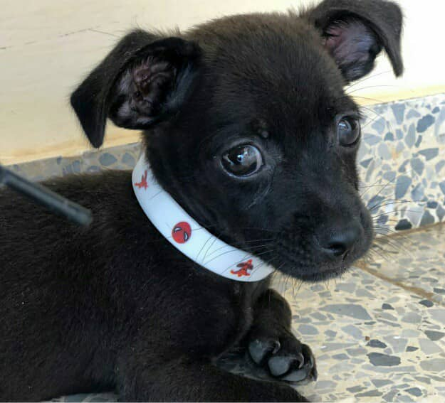
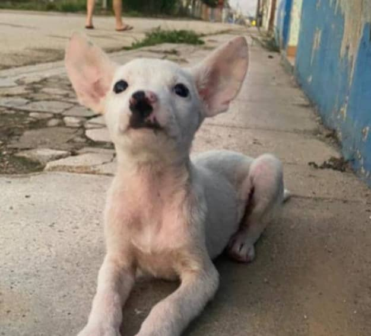
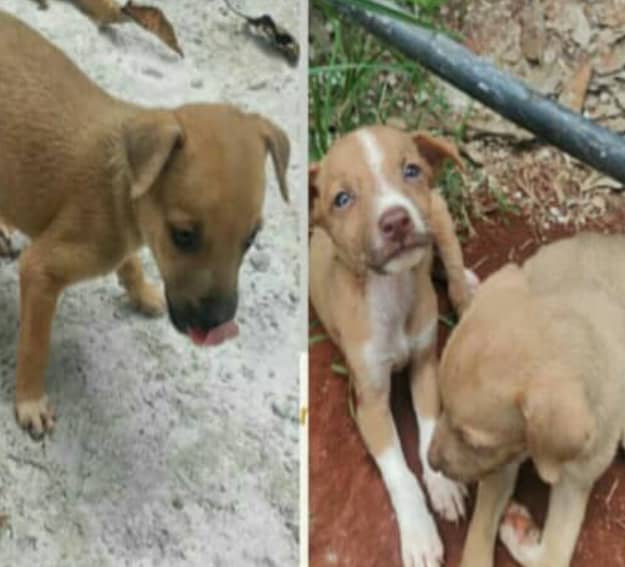
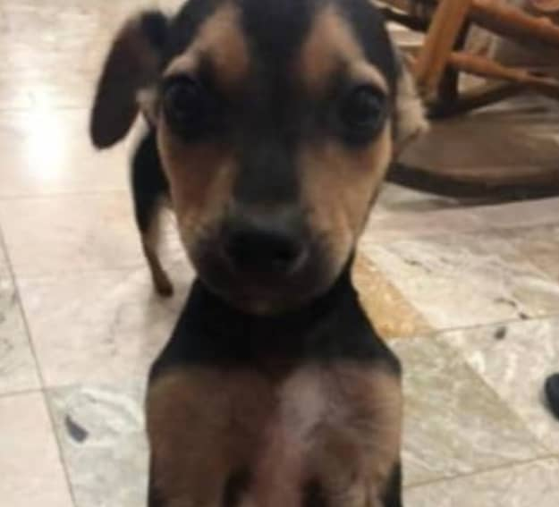
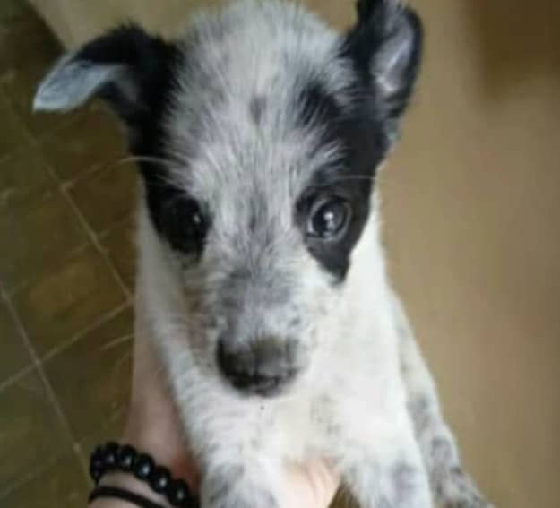
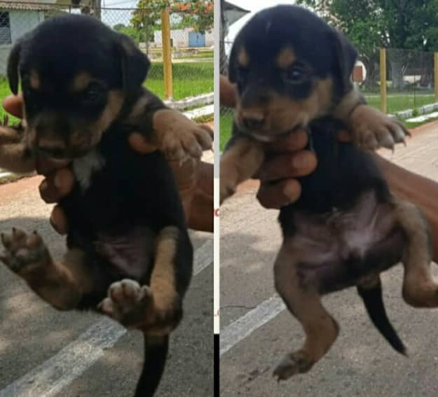
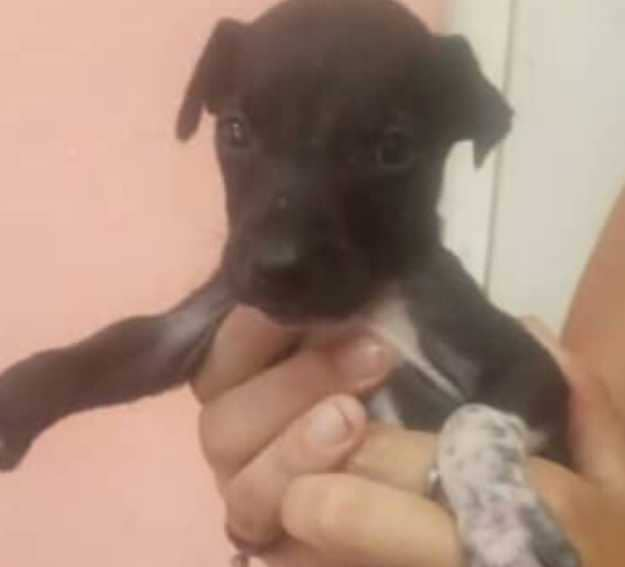
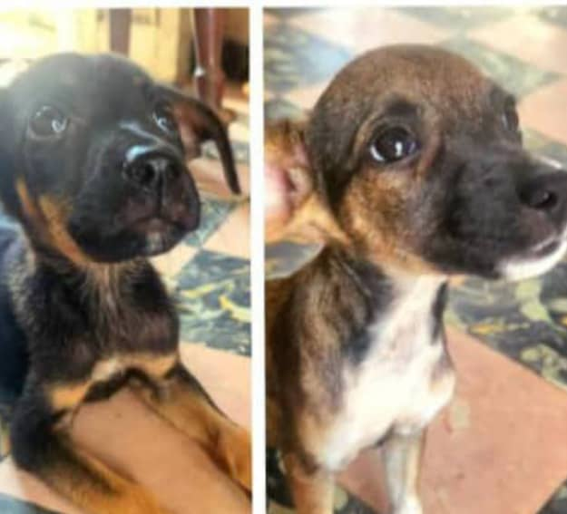

En la tierra del Ariguanabo, San Antonio de los Baños, nació, en noviembre de 2019, el Equipo de Protección Animal (EPA). Actualmente cuenta con 7 miembros, en su mayoría jóvenes que dividen su jornada entre el estudio, el trabajo y el cuidado a las mascotas vulnerables.
¡Adopciones!

Macho 2 Meses Pequeño San Antonio de los Baños

Hembra 2 Meses Pequeña Desparacitada San Antonio de los Baños

Hembras 50 Días Pequeñas San Antonio de los Baños

Macho 4 Meses Pequeño Desparacitado San Antonio de los Baños

Macho 2 Meses Pequeño Desparacitado Alquizar

Machos 45 Días Pequeños San Antonio de los Baños

Macho 50 Días Pequeño San Antonio de los Baños
Macho Cachorro Pequeño San Antonio de los Baños

Hembras 2 Meses Pequeñas Desparacitadas San Antonio de los Baños
Nuestras Premisas
¿Qué debes hacer para reportar un caso?
Pueden contactarnos mediante WhatsApp o llamada a los números de la sección de contacto.
¿Cuál es la ayuda que podemos brindar?
Nuestro equipo se propone crear conciencia para acabar con el maltrato animal y en la medida de lo posible poder ayudar a los casos que se nos presenta. No contamos con un local como refugio para recoger animales por lo que casi siempre se atienden en la calle o en locales temporales que brindan los voluntarios. Hemos dado promocion con la confección de carteles ya sea adopción, pérdida, temporales o tránsitos logrando ayudar a gran cantidad de animales. Por eso la importancia de reportar los casos pues mediante la promoción se consiguen medicamentos, comida, muchas veces casas de acogida y diversas donaciones con vista a la recuperación del animal.
Nuestro Trabajo
Durante estos casi 5 años de creado, EPA ha brindado ayuda a muchos animales necesitados. Nuestra constancia y dedicación ha salvado y mejorado la vida hay muchos peludos, Estamos muy orgullosos de la labor realizada ya que no hay nada más gratificante que ver la recuperación de un animal en mal estado, ver como retoma su confianza y como lo agradece mostrándonos su amor. El bienestar animal es nuestro principio y a pesar de las malas experiencias que hemos tenido, no opacan las ganas y los deseos de continuar salvando vidas. Las estamos muy agradecidos a todas las personas que han brindados ayuda para que EPA sea cada vez más eficiente y útil. Qué aquí una muestra de nuestro trabajo, animalitos que han llegado en nuestro equipo en las peores condiciones y que hoy forman parte de estas historias con final feliz, historias que jamás podremos olvidar.
Actividades realizadas
Campañas Veterinarias
Realizacion de campañas veterinarias que incluyen: vacunación, desparacitación, castración, corte de uñas y muchas otras actividades.
Ferias de Adopción
Realización de ferias de adopciones responsables que promueven la importancia de adoptar antes de comprar
Campañas de Concientización
Visitas a centros educativos para crear conciencia desde edades temprana sobre el cuidado animal.
Actividades Culturales
Realizacion de actividades culturalespara fomentar la cultura del cuidado y protección de todos los animales.